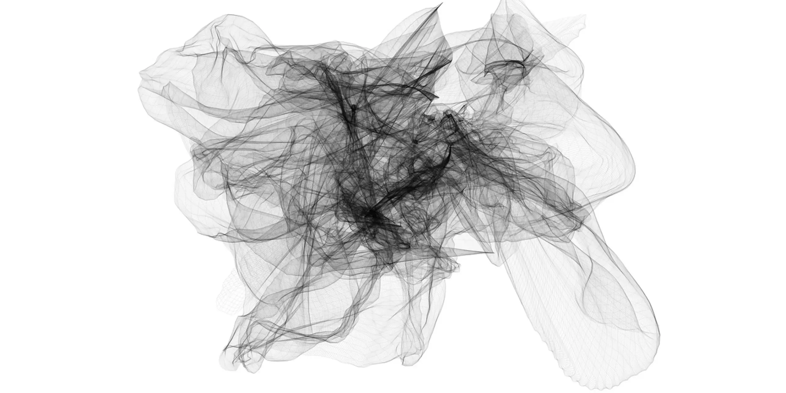

 If you’ve been exploring AO applications, you’ve likely encountered the term “message,” especially when reviewing transactions on ao.link. Diving into the messages on ao.link can feel overwhelming, especially if you’re just trying to confirm that your transaction went through.
This guide explains why messages on AO differ from other blockchains and how AO’s unique approach to parallel execution unlocks unmatched scalability and efficiency.
What is shared memory?
Many blockchains use shared memory, where all smart contracts access the same memory space. This design allows contracts to read and write data directly, making certain operations simpler. However, it introduces a significant limitation: lock contention.
Lock contention happens when multiple users try to access and modify the same data simultaneously. To avoid conflicts, processes must take turns. For example:
-
Alice locks the data, makes her changes, and unlocks it.
-
Only then can Bob access and modify the data.
While this system works well at smaller scales, it becomes a bottleneck as network usage grows.

Simple diagram illustrating lock contention, sourced from this blog.
How does AO message passing work?
AO uses a fundamentally different approach. Instead of relying on shared memory, smart contracts on AO operate as independent, asynchronous processes.
-
Each contract runs independently and communicates with others by sending messages.
-
These messages are stored permanently and verifiably on Arweave, ensuring security and transparency.
This design removes the need for a global memory space where processes compete for access, effectively eliminating lock contention.
To help visualize this system, the diagram below illustrates how messages flow through units on the network.

Diagram illustrating AO message passing, sourced from the AO cookbook.
These units form the foundation of AO and collectively operate the AO Operating System (aos). Without diving too deep into the technical side, here’s a high-level overview of the three unit types:
-
Messager Unit (MU): Acts as the entry point, receiving external messages, managing communication between processes, and forwarding messages to the Scheduler Unit (SU).
-
Scheduler Unit (SU): Ensures messages are properly sequenced and stored on Arweave for consistent replay and verification.
-
Compute Unit (CU): Handles the heavy lifting by performing computations, managing memory, and returning results to the MU for further processing.
These units can exist in multiples across the network, working together to run aos efficiently and securely.
How AO processes scale
Each AO process operates on the speed of a single CPU thread. When a process becomes too busy, it can split into multiple processes to handle the workload, a method called horizontal scaling.
For example, users familiar with Bazar know it runs on the Universal Content Marketplace (UCM) protocol. During the AO testnet, the UCM process experienced high traffic, which occasionally slowed performance. To solve this, UCM is being horizontally scaled into sub-orderbooks, meaning every atomic asset listed for sale will have its own UCM process.
This scalability allows AO to handle increased traffic and complexity without slowing down.
Trade-offs
The main trade-off of message passing is the lack of instantaneous access to shared global memory. Instead, processes must “ask” for information by sending and receiving messages from other processes.
While this introduces additional complexity, AO developers have worked hard to make these interactions efficient and seamless. A major focus during the AO testnet phase has been improving infrastructure and the developer experience. These advancements have enabled consumer app developers to enhance the user experience of their applications. You can explore the rapidly growing permaweb ecosystem here.
As we continue developing Bazar and other user-facing applications, we aim to make the user experience as seamless as possible. This involves what I like to call as “hiding the wires” so users can enjoy the platform without unnecessary friction.
Conclusion
AO’s approach to message passing eliminates the bottlenecks of shared memory systems. Instead of competing for access to a single thread of execution, processes communicate asynchronously and in parallel.
If this all sounds complex, you’re not alone, and frankly these are technical intricacies most users don’t care about as long as the system works and remains decentralized. That’s why it’s essential to continue abstracting away the complexities and building platforms that are both user-friendly but not compromising on decentralization.
This post was inspired by this tweet from Sam Williams, the founder of Arweave/AO.
This is not financial advice. Please do your own research.
Original post: https://paragraph.xyz/@afmedia/how-message-passing-works-on-ao